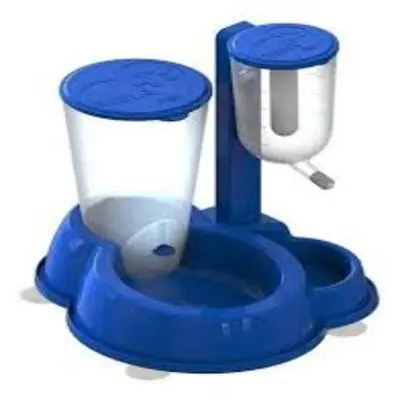

Comedouro e Bebedouro Duplo
Detalhes do Produto
- Marca
- FeedPro
- Material
- Aço inoxidável com base em plástico antiderrapante
- Indicação
- Cães e gatos de todos os tamanhos
- Capacidade
- 500ml cada tigela
- Características
-
- Aço inox de alta qualidade
- Base antiderrapante
- Fácil de limpar
- Higiênico e durável
- Não acumula odores
- Tamanhos
- P (300ml), M (500ml), G (800ml)
- Preço
- R$ 54,90
Descrição
Set completo com comedouro e bebedouro em aço inoxidável de alta qualidade. A base antiderrapante evita que as tigelas deslizem durante a alimentação. Fácil de limpar e super higiênico para a saúde do seu pet.